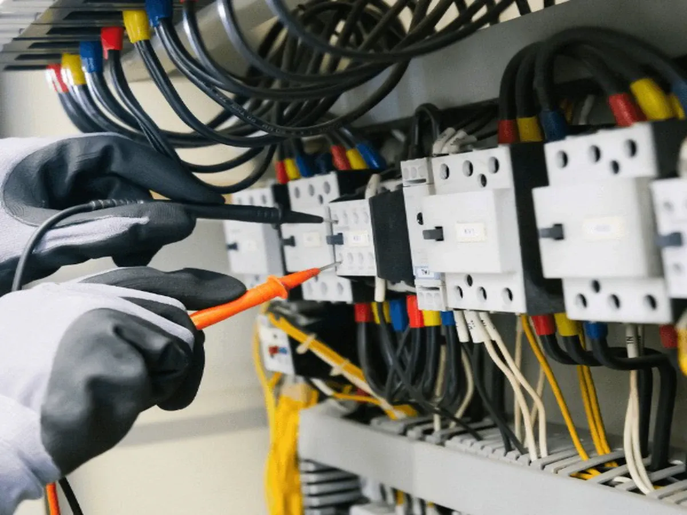
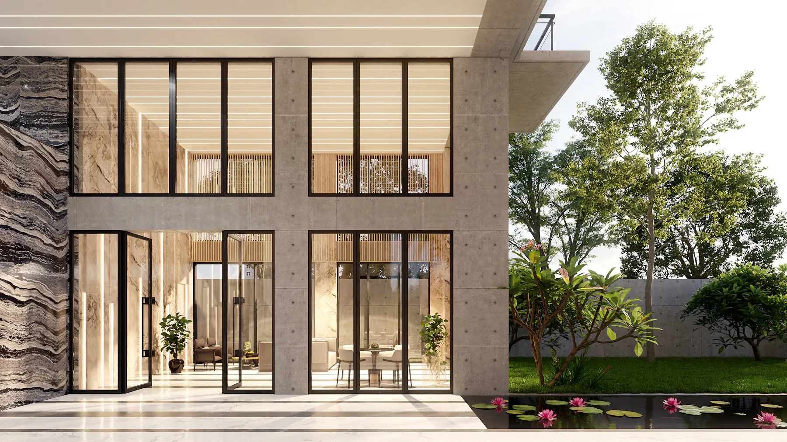
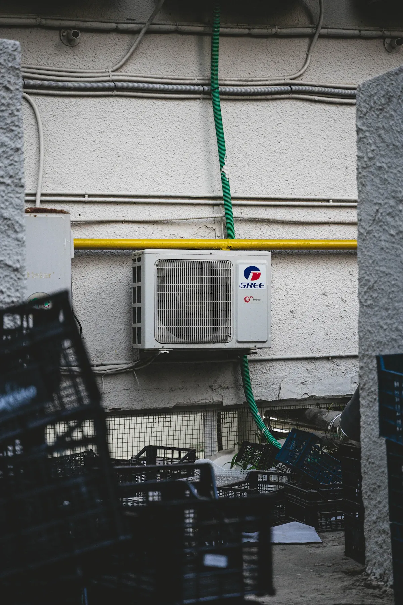
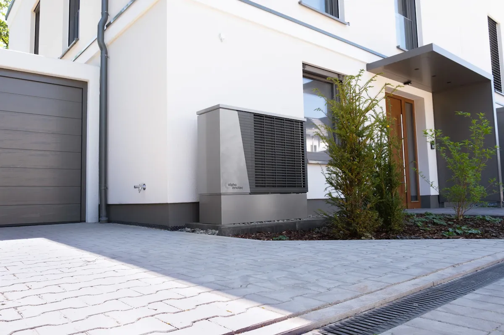
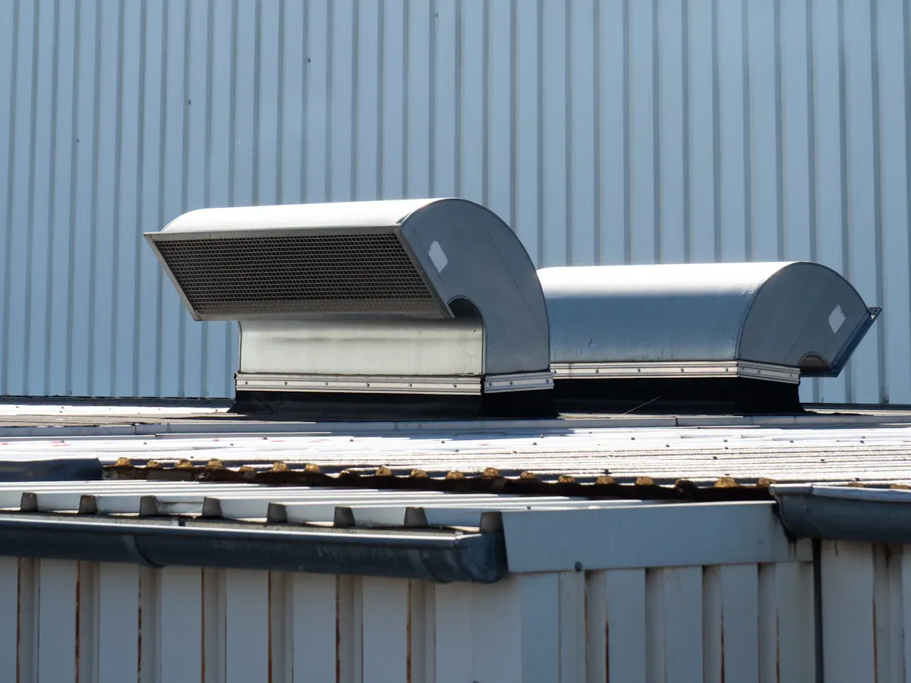
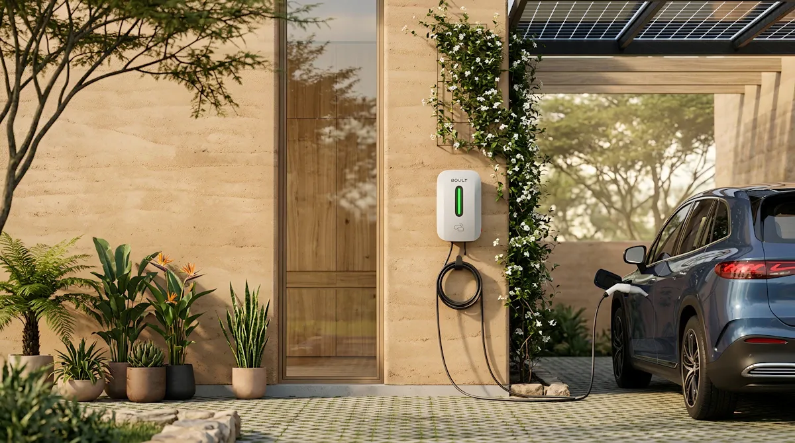

01
Elektriciteit
Een veilige, overzichtelijke basis voor renovatie, uitbreiding of vernieuwing.
Bespreek uw installatie →Installatie · klimaat · energie
Elektriciteit, klimaat en slim laden. Ontdek welke oplossing past bij uw woning, met heldere keuzes van eerste vraag tot installatie.

Klimaat, energie en installatie als één doordacht geheel.
01 Heldere keuzes zonder technisch jargon
02 Informatie slechts één keer invullen
03 Klaar voor slimme opvolging
Expertise
Van een veilige elektrische installatie tot een aangenaam binnenklimaat. Verken de vijf disciplines en kies wat bij uw plannen past.

Een veilige, overzichtelijke basis voor renovatie, uitbreiding of vernieuwing.
Bespreek uw installatie →
Gericht koelen en verwarmen met aandacht voor comfort, geluid en plaatsing.
Verken uw comfort →
Een toekomstgerichte route naar efficiënt verwarmen en eventueel koelen.
Bekijk de mogelijkheden →
Gezonde lucht en gecontroleerde vochtbalans, afgestemd op de woning.
Verbeter uw binnenlucht →
Thuis laden met aandacht voor vermogen, verbruik en uw installatie.
Plan uw laadpunt →Eerst begrijpen, dan installeren
Een goed traject vertaalt technische keuzes naar comfort, zekerheid en een duidelijke volgende stap.
Demo-impressies
Deze beelden zijn uitsluitend fictieve sfeerbeelden. Ze tonen de mogelijke presentatie van projecten en zijn geen door Kelmora uitgevoerde realisaties.
Een voorbeeld van hoe context, resultaat en ontwerp samenkomen.
Sfeerbeelden ter illustratie — geen uitgevoerde projecten of bewezen resultaten.
Interactieve keuzehulp
Beantwoord enkele korte vragen. U krijgt een voorzichtige demo-aanbeveling en neemt uw antwoorden meteen mee naar de aanvraag.
Interactieve prijsindicatie
Kies uw situatie en bekijk onmiddellijk een fictieve bandbreedte. Geen offerte, wel een helder vertrekpunt voor een gesprek.
Indicatieve demo-investering
Vul de eerste drie keuzes in om een fictieve bandbreedte te zien.
Demonstratie – fictieve onderneming en voorbeeldprijzen. De uiteindelijke prijs is afhankelijk van de werkelijke situatie.
Van vraag naar plan
Elke stap geeft duidelijkheid en vraagt alleen informatie die op dat moment relevant is.
Doel en situatie worden helder.
De technische context krijgt vorm.
Een passende richting wordt besproken.
Planning en afwerking staan centraal.
Fictieve reviews
Onderstaande citaten zijn uitsluitend demonstratief en niet afkomstig van echte klanten.
“We begrepen meteen welke informatie nodig was om gericht verder te kunnen.”
“De keuzehulp maakte een technisch onderwerp verrassend overzichtelijk.”
Slimme demo-aanvraag
Antwoorden uit de assistent, keuzehulp of prijsindicatie verschijnen hier automatisch. Deze demo verstuurt niets.
Demonstratie van mogelijke automatisering
In een echte implementatie kan LK Webdesign deze stappen koppelen. In deze demo is geen e-mail, CRM, agenda of externe API actief.
Demo gereed Rond de fictieve aanvraag af om de mogelijke flow te bekijken.
Van website naar werkinstrument
Deze fictieve demo toont hoe design, slimme assistentie en leadstructuur één overtuigende ervaring vormen.
Bekijk wat mogelijk is ↑